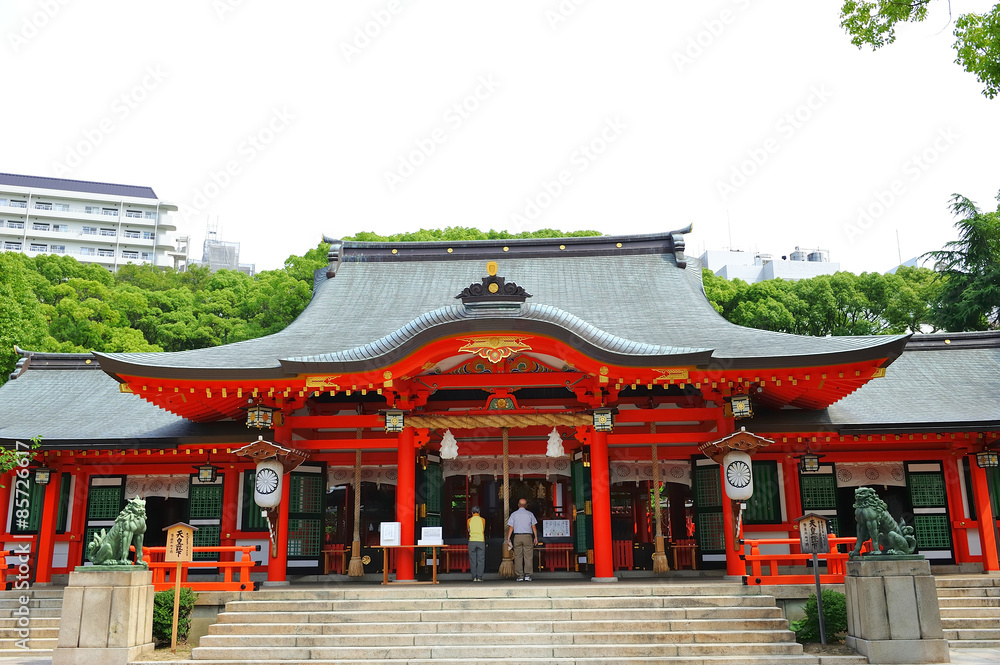
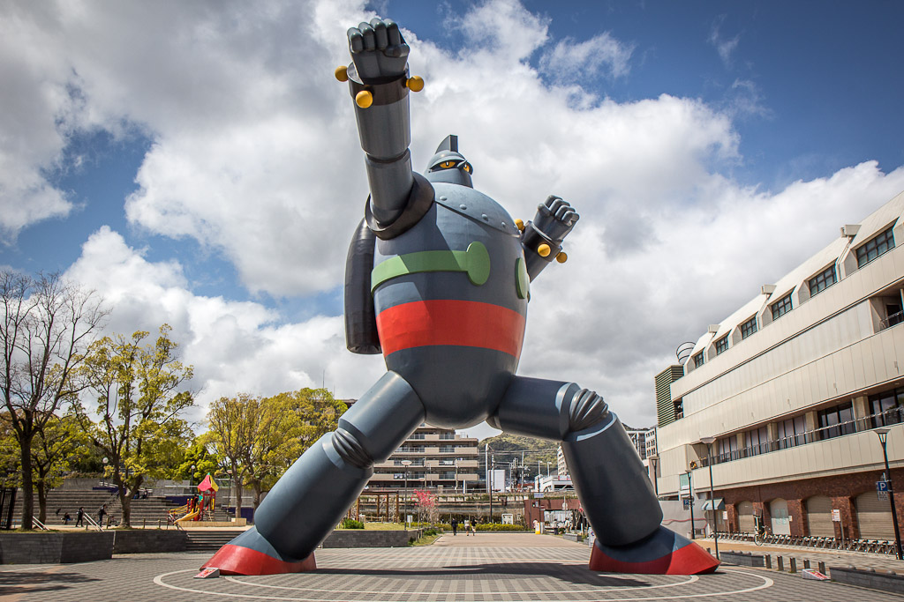
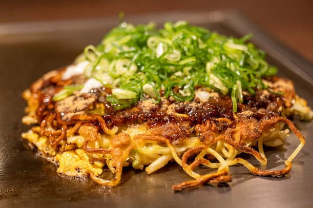
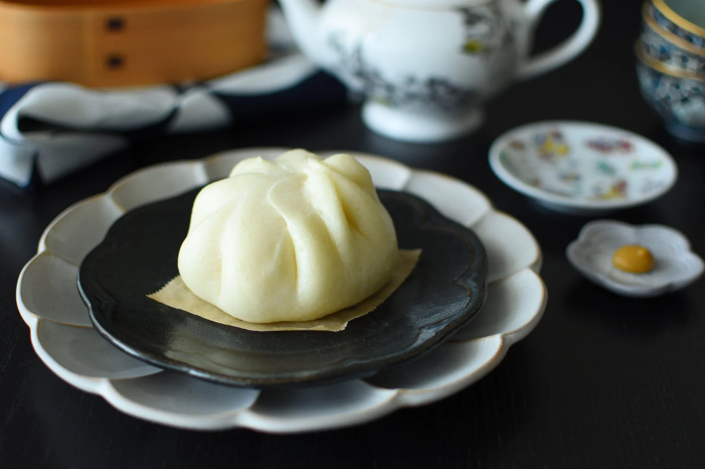

Get Lost in a Small Town Between Two Big Cities
Kota Kecil di Sudut Pulau Hanshin dengan 1001 Masa Lalu yang Bikin Takjub
Nagata-ku
Kota kecil yang terletak di antara Hyogo-ku dan Suma-ku, di kawasan Kobe, bagian selatan Pulau Honshu, Jepang, ternyata memiliki sejarah yang kaya akan kisah manis dan pahit. Meskipun ukurannya kecil dan sering kali terlewatkan oleh banyak orang, kota ini menyimpan cerita-cerita menarik yang mengungkapkan perjalanan panjangnya. Dari masa lalu yang penuh tantangan hingga transformasi yang membawa perubahan besar, kota ini menawarkan banyak pelajaran dan keindahan tersembunyi.
Penasarankan? Let's scroll!!
Sejarah
Nama "Nagata" berasal dari dua karakter kanji, yaitu Naga (長), yang berarti "panjang" atau "abadi." Kata ini sering dikaitkan dengan umur panjang, keberlanjutan, atau sejarah yang panjang. Sementara itu, Ta (田) berarti "sawah" atau "ladang," yang melambangkan pertanian dan kesuburan, simbol kehidupan dan produktivitas. Nama ini mencerminkan kehidupan di kota tersebut yang memiliki sejarah panjang dan perjalanan yang berliku.
Sebagai salah satu dari sembilan distrik yang membentuk Kota Kobe, sebuah kota besar di Prefektur Hyogo, Jepang, Nagata-ku memiliki sejarah yang cukup prestisius pada zaman Edo (1603-1868). Distrik ini merupakan daerah penting di Kobe, terutama dalam bidang industri dan perdagangan, khususnya selama perkembangan Jepang modern pada abad ke-19 dan 20. Nagata-ku juga dikenal sebagai pusat produksi barang-barang kulit dan sepatu, industri yang tetap penting hingga hari ini. Sebagian besar sektor industrinya berkaitan dengan pengolahan bahan baku dan produksi manufaktur.
Namun, tak disangka, pada 17 Januari 1995, gempa bumi besar yang dikenal sebagai The Great Hanshin Earthquake melanda kawasan ini. Dalam waktu hanya 20 detik, gempa tersebut menyebabkan kehancuran besar di Nagata-ku, menjadikannya salah satu distrik dengan jumlah korban terbesar di Kobe.
Destinasi
Kuil Nagata

Nagata shrine, kuil Shinto yang didedikasikan untuk dewa Kotoshironushi no Mikoto. Kuil ini memiliki sejarah lebih dari 1800 tahun dan merupakan salah satu dari tiga kuil besar di Kobe. Nagata Jinja terkenal sebagai tempat perayaan berbagai festival tahunan, termasuk festival musim panas yang meriah.
Tetsujin 28

Patung yang diciptakan oleh seniman manga Mitsuteru Yokoyama ini terletak pada sisi selatan Stasiun JR Shin-Nigata. Patung yang memiliki tinggi 18 meter ini menggambarkan karakter Gigantor yang diciptakan oleh sanga mangaka.
Kuliner
Modanyaki (モダン焼き)

Modanyaki pada dasarnya adalah okonomiyaki dengan style Kobe yang merupakan sejenis panekuk gurih yang disukai hampir seluruh lapisan masyarakat Kobe, tak terkecuali Nagata-ku. Terdiri dari adonan tepung terigu yang mengandung Yakisoba dan dimasak di atas pan penggorengan.
Nikuman (にくまん)

Roti kukus yang biasanya diisi dengan daging babi ini memiliki cita rasa yang sedikit manis dengan tekstur dari babi yang dibuat berair dan sangat kaya akan isi. Nikuman ala Nagata-ku ini cukup popular mulai dari kalangan anak-anak hingga orang dewasa yang menikmati hidangan tersebut.
Written by:
Nisrina Salwa Putri
Surabaya, Indonesia